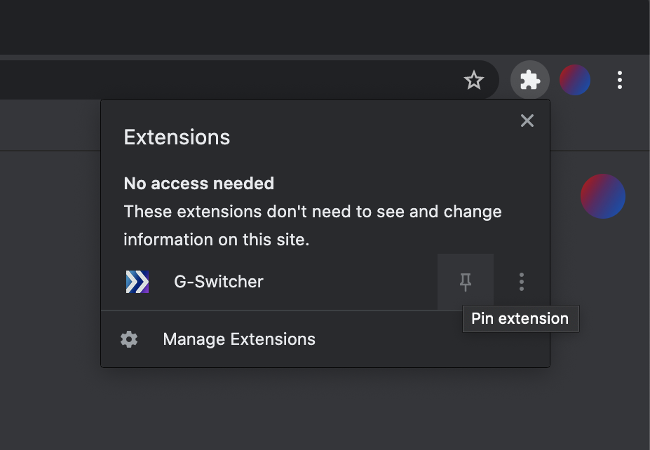

Welcome to G-Switcher!
G-Switcher needs to be pined to your task bar in order to function.
1. Click the puzzle piece in the top right corner of your browser
2. Click the "pin" icon next to the G-Switcher icon
3. Click on the icon you just added in order to finish setup!